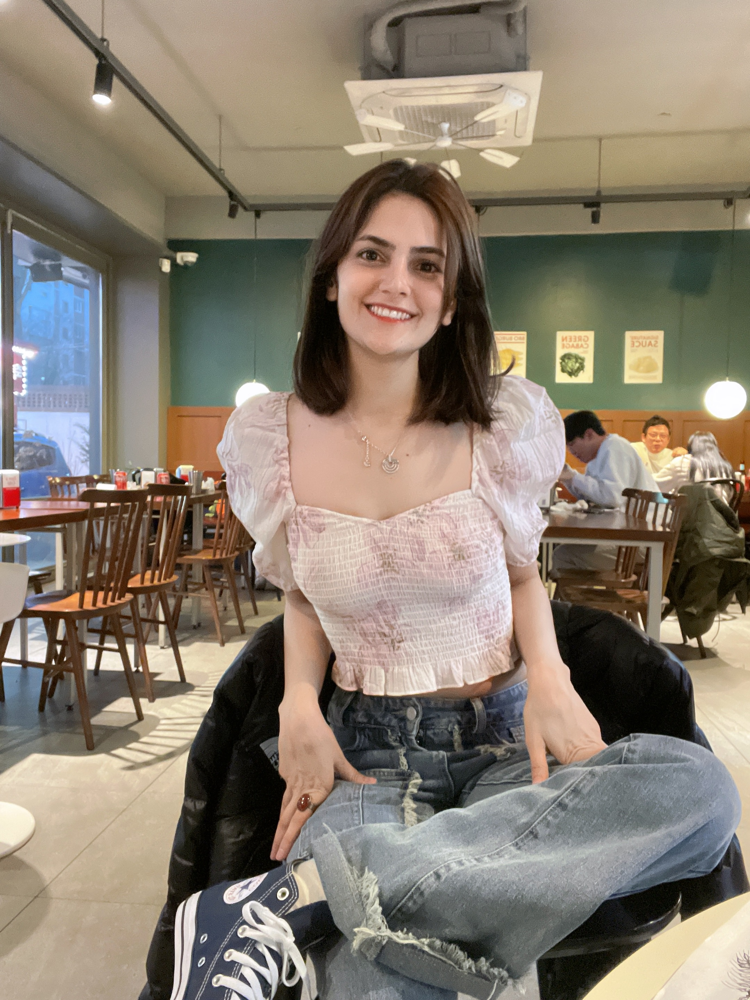
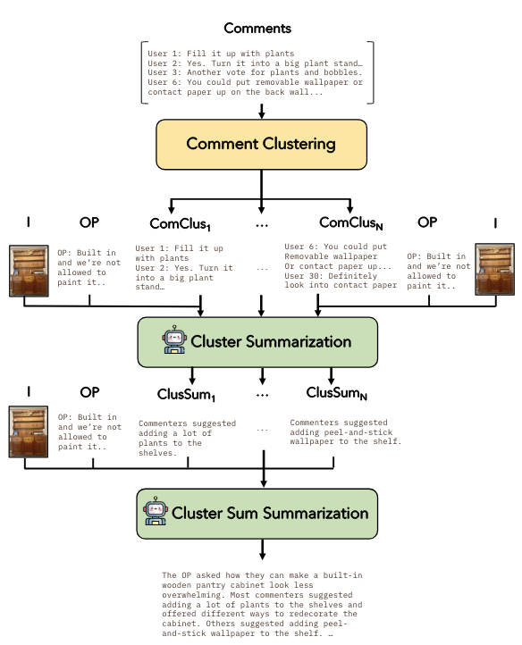

|
Fatemeh Pesaran zadeh
Hello!
I am a 2nd year Master's student at Seoul National University, Computer Science department, Vision & learning lab, advised by Gunhee Kim.
My research interests lie in solving difficult problems in Large Language Models (LLMs) and Vision-Language Models (VLMs) and optimizing them using reinforcement learning.
Specifically, I have worked on using automatic reward to optimize LLMs for the chart generation task.
I completed my Bachelors in Computer Science from Seoul National University in 2022.
CV /
Github /
Twitter
/
|

|
|

|
mRedditSum: A Multimodal Abstractive Summarization Dataset of Reddit Threads with Images
Keighley Overbay, Jaewoo Ahn, Fatemeh Pesaran zadeh, Joonsuk Park, Gunhee Kim
EMNLP, 2023
Paper |
Code |
We propose LayerMerge, a novel depth compression method that selects which activation layers and convolution layers
to remove, to achieve a desired inference speed-up while minimizing performance loss.
|
|